| âge | défaut — avant | défaut — après | rouge long — avant | rouge long — après |
|---|---|---|---|---|
| 0,5 s | PLEIN_FEU · énergie rel. 1.00 · âge lu 0.500 s 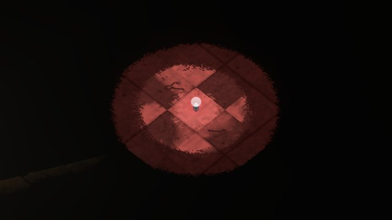 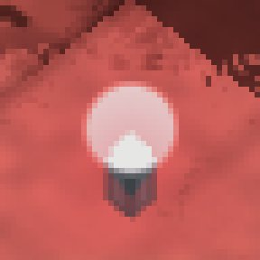 point (230, 230, 229) · 60° · sat. 0.00 · presque blanc contribution du halo seul (170, 165, 159) · 33° noir : 9778 fuite(s) de fumée | PLEIN_FEU · énergie rel. 1.00 · âge lu 0.500 s  point (230, 214, 213) · 4° · sat. 0.07 · presque blanc contribution du halo seul (170, 149, 143) · 13° noir : 9778 fuite(s) de fumée | PLEIN_FEU · énergie rel. 1.00 · âge lu 0.500 s  point (230, 230, 229) · 60° · sat. 0.00 · presque blanc contribution du halo seul (170, 165, 159) · 33° noir : 9778 fuite(s) de fumée | PLEIN_FEU · énergie rel. 1.00 · âge lu 0.500 s 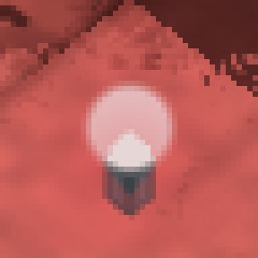 point (230, 214, 213) · 4° · sat. 0.07 · presque blanc contribution du halo seul (170, 149, 143) · 13° noir : 9778 fuite(s) de fumée |
| 1,5 s | PLEIN_FEU · énergie rel. 1.00 · âge lu 1.500 s  point (230, 230, 229) · 60° · sat. 0.00 · presque blanc contribution du halo seul (170, 165, 159) · 33° noir : 13679 fuite(s) de fumée | PLEIN_FEU · énergie rel. 1.00 · âge lu 1.500 s 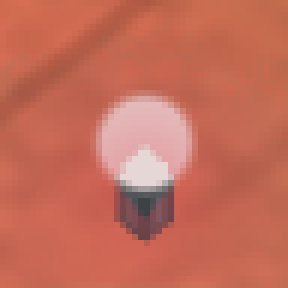 point (230, 214, 213) · 4° · sat. 0.07 · presque blanc contribution du halo seul (169, 149, 143) · 14° noir : 13679 fuite(s) de fumée | PLEIN_FEU · énergie rel. 1.00 · âge lu 1.500 s 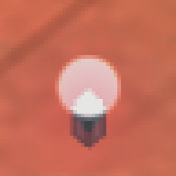 point (230, 230, 229) · 60° · sat. 0.00 · presque blanc contribution du halo seul (170, 165, 159) · 33° noir : 13683 fuite(s) de fumée | PLEIN_FEU · énergie rel. 1.00 · âge lu 1.500 s 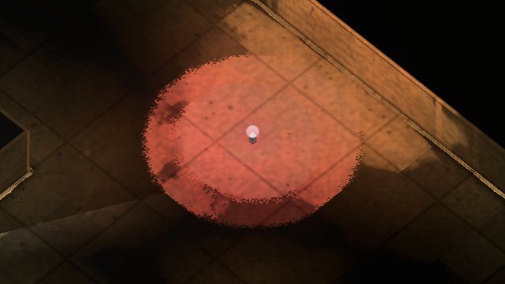  point (230, 214, 213) · 4° · sat. 0.07 · presque blanc contribution du halo seul (169, 149, 143) · 14° noir : 13683 fuite(s) de fumée |
| 2,0 s | BRAISE · énergie rel. 0.99 · âge lu 2.017 s 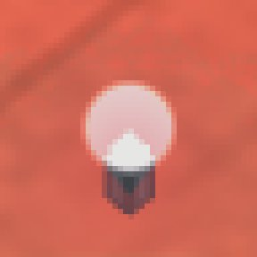 point (230, 230, 229) · 60° · sat. 0.00 · presque blanc contribution du halo seul (169, 164, 159) · 30° noir : 43567 fuite(s) de fumée | BRAISE · énergie rel. 0.99 · âge lu 2.017 s 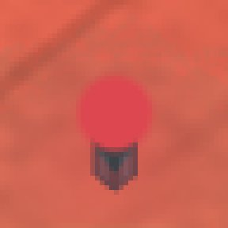 point (221, 71, 79) · 357° · sat. 0.68 · rouge contribution du halo seul (160, 5, 9) · 358° noir : 43567 fuite(s) de fumée | PLEIN_FEU · énergie rel. 1.00 · âge lu 2.017 s 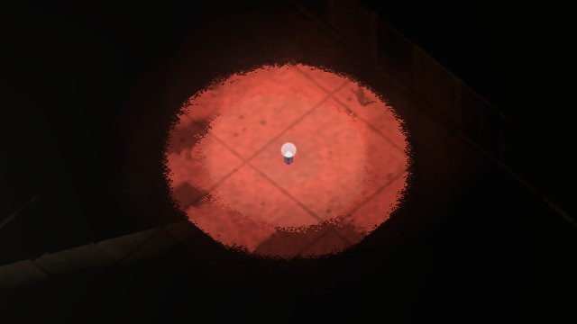 point (230, 230, 229) · 60° · sat. 0.00 · presque blanc contribution du halo seul (169, 164, 159) · 30° noir : 43628 fuite(s) de fumée | PLEIN_FEU · énergie rel. 1.00 · âge lu 2.017 s 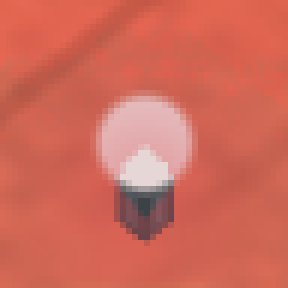 point (230, 214, 213) · 4° · sat. 0.07 · presque blanc contribution du halo seul (169, 148, 143) · 12° noir : 43628 fuite(s) de fumée |
| 2,5 s | BRAISE · énergie rel. 0.80 · âge lu 2.500 s 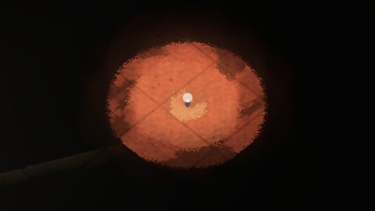 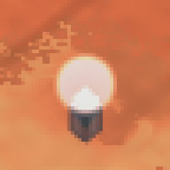 point (230, 227, 222) · 38° · sat. 0.04 · presque blanc contribution du halo seul (169, 161, 151) · 33° noir : 29350 fuite(s) de fumée | BRAISE · énergie rel. 0.80 · âge lu 2.500 s 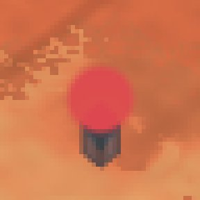 point (221, 71, 80) · 356° · sat. 0.68 · rouge contribution du halo seul (160, 5, 9) · 358° noir : 29350 fuite(s) de fumée | PLEIN_FEU · énergie rel. 1.00 · âge lu 2.500 s 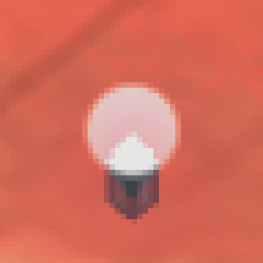 point (230, 230, 229) · 60° · sat. 0.00 · presque blanc contribution du halo seul (169, 164, 159) · 30° noir : 30931 fuite(s) de fumée | PLEIN_FEU · énergie rel. 1.00 · âge lu 2.500 s 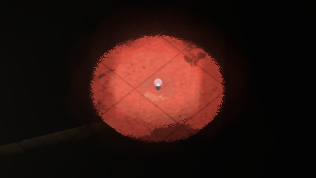 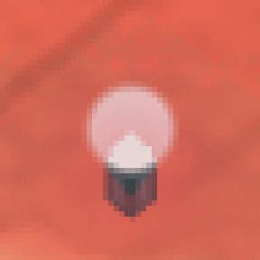 point (230, 214, 213) · 4° · sat. 0.07 · presque blanc contribution du halo seul (169, 148, 142) · 13° noir : 30931 fuite(s) de fumée |
| 3,0 s | BRAISE · énergie rel. 0.59 · âge lu 3.017 s 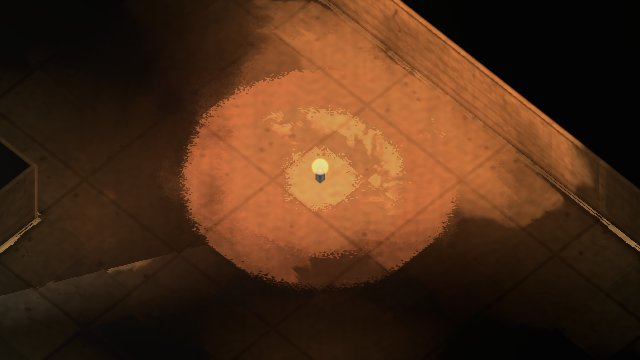 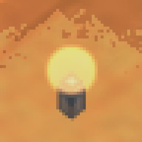 point (230, 190, 130) · 36° · sat. 0.43 · NI ROUGE NI BLANC contribution du halo seul (169, 125, 60) · 36° noir : 5558 fuite(s) de fumée | BRAISE · énergie rel. 0.59 · âge lu 3.017 s 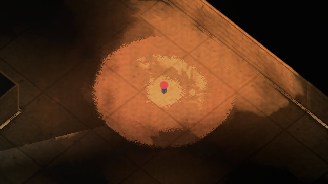 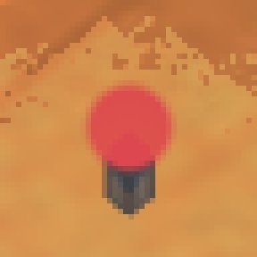 point (221, 71, 80) · 356° · sat. 0.68 · rouge contribution du halo seul (160, 5, 9) · 358° noir : 5562 fuite(s) de fumée | PLEIN_FEU · énergie rel. 1.00 · âge lu 3.017 s 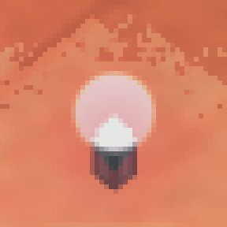 point (230, 230, 229) · 60° · sat. 0.00 · presque blanc contribution du halo seul (169, 164, 159) · 30° noir : 5573 fuite(s) de fumée | PLEIN_FEU · énergie rel. 1.00 · âge lu 3.017 s 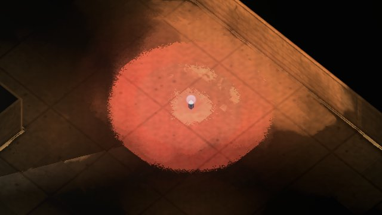 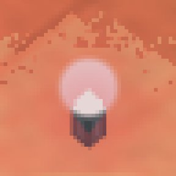 point (230, 214, 213) · 4° · sat. 0.07 · presque blanc contribution du halo seul (169, 148, 142) · 13° noir : 5558 fuite(s) de fumée |
| 3,5 s | BRAISE · énergie rel. 0.40 · âge lu 3.500 s 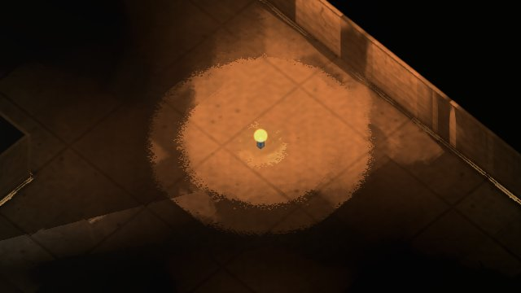 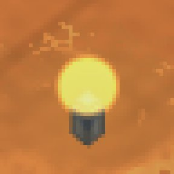 point (230, 219, 123) · 54° · sat. 0.47 · NI ROUGE NI BLANC contribution du halo seul (170, 154, 53) · 52° noir : 23795 fuite(s) de fumée | BRAISE · énergie rel. 0.40 · âge lu 3.500 s 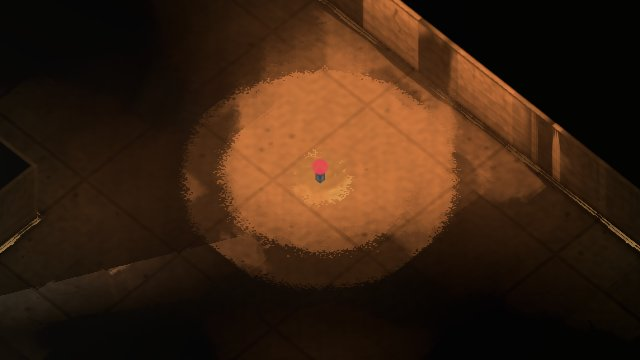 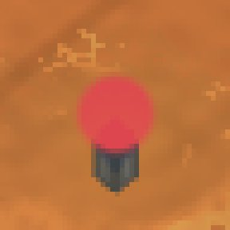 point (221, 70, 79) · 356° · sat. 0.68 · rouge contribution du halo seul (161, 5, 9) · 358° noir : 23795 fuite(s) de fumée | PLEIN_FEU · énergie rel. 1.00 · âge lu 3.500 s 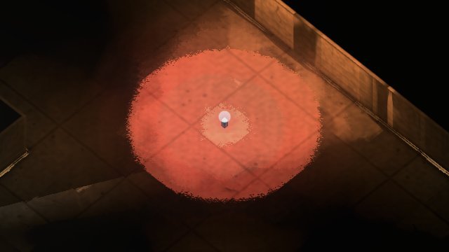 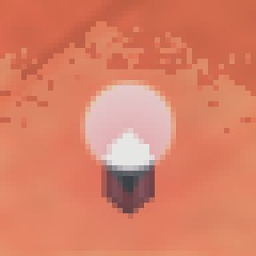 point (230, 230, 229) · 60° · sat. 0.00 · presque blanc contribution du halo seul (170, 165, 159) · 33° noir : 32882 fuite(s) de fumée | PLEIN_FEU · énergie rel. 1.00 · âge lu 3.500 s 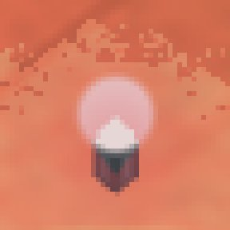 point (230, 214, 213) · 4° · sat. 0.07 · presque blanc contribution du halo seul (170, 149, 143) · 13° noir : 32882 fuite(s) de fumée |
| 4,0 s | BRAISE · énergie rel. 0.40 · âge lu 4.017 s 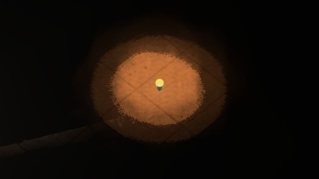 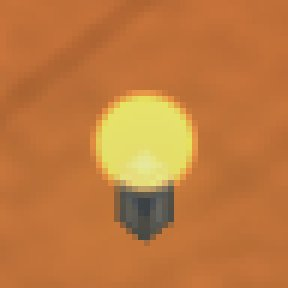 point (230, 219, 123) · 54° · sat. 0.47 · NI ROUGE NI BLANC contribution du halo seul (170, 154, 53) · 52° noir : 31546 fuite(s) de fumée | BRAISE · énergie rel. 0.40 · âge lu 4.017 s 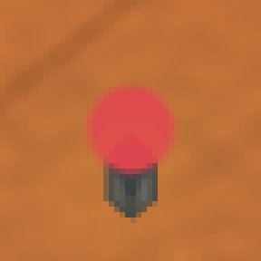 point (221, 70, 79) · 356° · sat. 0.68 · rouge contribution du halo seul (161, 5, 9) · 358° noir : 31546 fuite(s) de fumée | BRAISE · énergie rel. 0.99 · âge lu 4.017 s 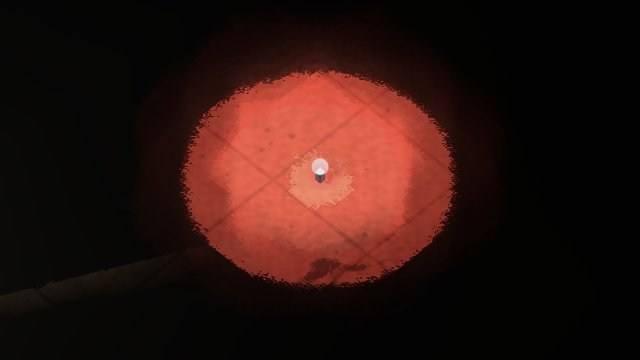 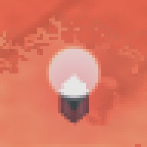 point (230, 230, 229) · 60° · sat. 0.00 · presque blanc contribution du halo seul (170, 165, 159) · 33° noir : 50518 fuite(s) de fumée | BRAISE · énergie rel. 0.99 · âge lu 4.017 s 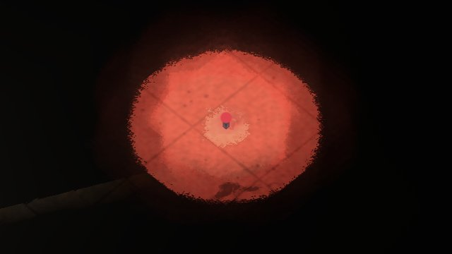 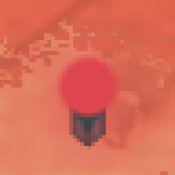 point (221, 70, 79) · 356° · sat. 0.68 · rouge contribution du halo seul (161, 5, 9) · 358° noir : 50518 fuite(s) de fumée |
| 5,0 s | BRAISE · énergie rel. 0.40 · âge lu 5.017 s 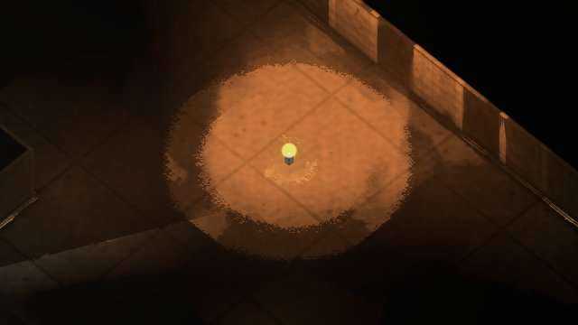 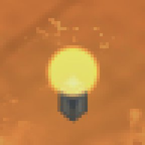 point (230, 219, 123) · 54° · sat. 0.47 · NI ROUGE NI BLANC contribution du halo seul (169, 153, 53) · 52° noir : 5932 fuite(s) de fumée | BRAISE · énergie rel. 0.40 · âge lu 5.017 s 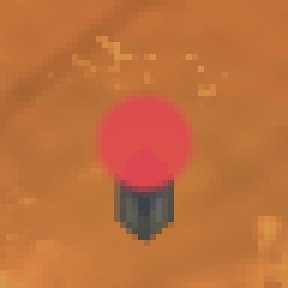 point (221, 71, 80) · 356° · sat. 0.68 · rouge contribution du halo seul (160, 5, 9) · 358° noir : 5935 fuite(s) de fumée | BRAISE · énergie rel. 0.59 · âge lu 5.017 s 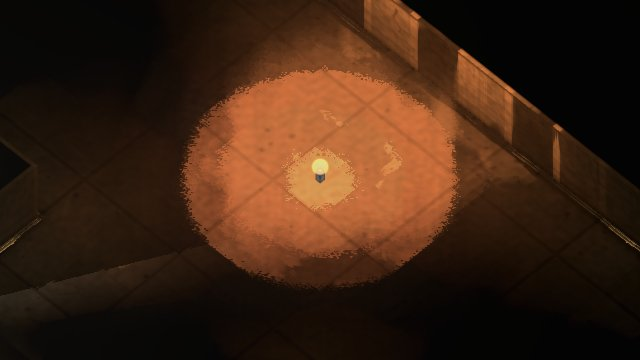 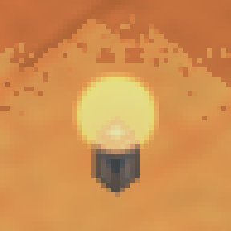 point (230, 190, 130) · 36° · sat. 0.43 · NI ROUGE NI BLANC contribution du halo seul (169, 124, 60) · 35° noir : 5927 fuite(s) de fumée | BRAISE · énergie rel. 0.59 · âge lu 5.017 s 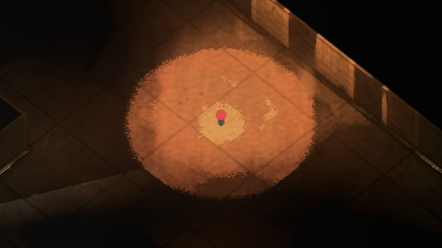 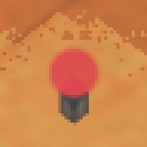 point (221, 71, 80) · 356° · sat. 0.68 · rouge contribution du halo seul (160, 5, 9) · 358° noir : 5926 fuite(s) de fumée |
| 8,0 s | BRAISE · énergie rel. 0.40 · âge lu 8.017 s 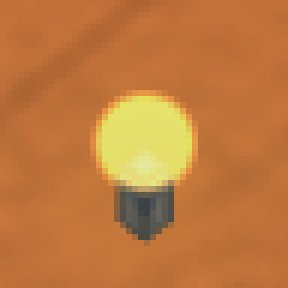 point (230, 219, 123) · 54° · sat. 0.47 · NI ROUGE NI BLANC contribution du halo seul (170, 153, 53) · 51° noir : 32491 fuite(s) de fumée | BRAISE · énergie rel. 0.40 · âge lu 8.017 s  point (221, 70, 79) · 356° · sat. 0.68 · rouge contribution du halo seul (161, 5, 9) · 358° noir : 32491 fuite(s) de fumée | BRAISE · énergie rel. 0.40 · âge lu 8.017 s 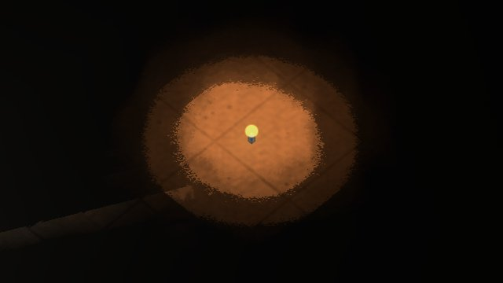  point (230, 219, 123) · 54° · sat. 0.47 · NI ROUGE NI BLANC contribution du halo seul (170, 153, 53) · 51° noir : 32491 fuite(s) de fumée | BRAISE · énergie rel. 0.40 · âge lu 8.017 s 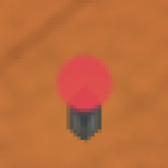 point (221, 70, 79) · 356° · sat. 0.68 · rouge contribution du halo seul (161, 5, 9) · 358° noir : 32491 fuite(s) de fumée |
| 13,0 s | AGONIE · énergie rel. 0.80 · âge lu 13.017 s 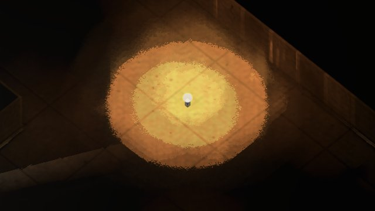  point (230, 230, 216) · 60° · sat. 0.06 · presque blanc contribution du halo seul (169, 164, 145) · 48° noir : 60779 fuite(s) de fumée | AGONIE · énergie rel. 0.80 · âge lu 13.017 s 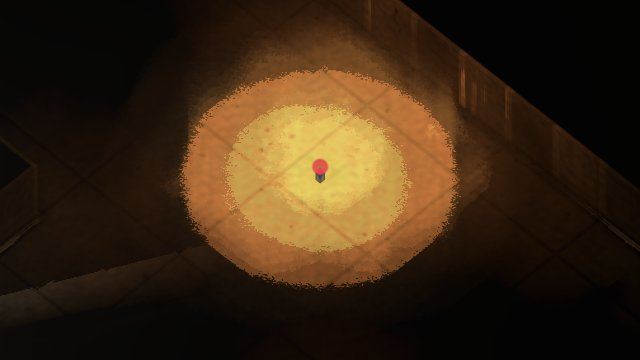 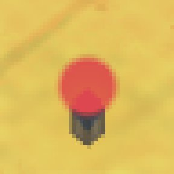 point (221, 71, 79) · 357° · sat. 0.68 · rouge contribution du halo seul (160, 5, 9) · 358° noir : 60779 fuite(s) de fumée | AGONIE · énergie rel. 0.80 · âge lu 13.017 s point (230, 230, 216) · 60° · sat. 0.06 · presque blanc contribution du halo seul (169, 164, 145) · 48° noir : 60779 fuite(s) de fumée | AGONIE · énergie rel. 0.80 · âge lu 13.017 s  point (221, 71, 79) · 357° · sat. 0.68 · rouge contribution du halo seul (160, 5, 9) · 358° noir : 60779 fuite(s) de fumée |
| 16,0 s | RESIDU · énergie rel. 0.07 · âge lu 16.017 s  point (82, 55, 26) · 31° · sat. 0.68 · NI ROUGE NI BLANC contribution du halo seul (35, 25, 8) · 38° noir : 6994 fuite(s) de fumée | RESIDU · énergie rel. 0.07 · âge lu 16.017 s  point (39, 10, 12) · 356° · sat. 0.74 · rouge contribution du halo seul (-10, -24, -11) · 0° noir : 7013 fuite(s) de fumée | RESIDU · énergie rel. 0.07 · âge lu 16.017 s point (82, 55, 26) · 31° · sat. 0.68 · NI ROUGE NI BLANC contribution du halo seul (35, 25, 8) · 38° noir : 6992 fuite(s) de fumée | RESIDU · énergie rel. 0.07 · âge lu 16.017 s point (39, 10, 12) · 356° · sat. 0.74 · rouge contribution du halo seul (-10, -24, -11) · 0° noir : 6992 fuite(s) de fumée |